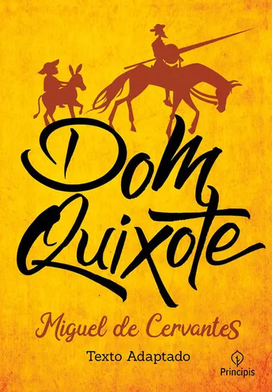

Lugares que você tem que conhecer
Paris
visitei em jan. de 2019
Foi incrível minha experiência, quando cheguei lá pude observar a torre mais bonita que ja vi (pelo menos a noite) e desejo realizar mais viagens como essa
Lisboa
visitei em fev. de 2021
A viagem demorou mas valeu a pena foi uma das mais bonitas cidades que ja conheci!
Crítica de Filmes
Filme bem legal e dinamico!
Não vemos a aranha picando Peter Parker, evento que ocasionou o
nascimento de um dos super-heróis mais famosos dos quadrinhos.
Todavia, Homem-Aranha: De Volta ao Lar é, à sua maneira,
um filme de origem. O aperitivo foi oferecido em Capitão
América: Guerra Civil (2016). Agora, a nova pegada se
consolida no primeiro longa-metragem solo de Tom Hollan
como o amigão da vizinhança. E coube ao cineasta Jon Watts
reinventar o aracnídeo na telona. Ele o faz com personalidade,
embora evidentemente alinhado ao itinerário produtivo da Marvel,
que tem nesse personagem a sua mais recente e valiosa aquisição,
sobretudo no que concerne ao time dos Vingadores. O início já
mostra a vontade de ressaltar o lado adolescente/imaturo de
Peter. O ainda deslumbrado garoto, representante da geração
selfie, recrutado por Tony Stark (Robert Downey Jr.), grava
tudo com entusiasmo, incluindo excertos da batalha do ae
roporto, vista na produção capitaneada por Joe e Anthony Russo.
O menino superpoderoso é protegido de Stark, mas logo
se decepciona por não ser designado às missões mais
complicadas, no mais das vezes tendo de aguardar
os chamados de Happy (Joh Favreau), assistente
do Homem de Ferro que nunca liga e tampouco
retorna suas mensagens. O realizador estabelec
e essa dinâmica ressaltando a ansiedade juvenil
do protagonista, promovendo instantes verdade
iramente engraçados e que, também, permitem
a imediata identificação com o sobrinho da
Tia May (Marisa Tomei). Aliás, até o burburinho
em torno da beleza de Tomei vira motivo de
boas sacadas. Homem-Aranha: De Volta ao Lar
desenvolve habilmente a simbiose entre Peter
e seu alterego extraordinário, alternando
a densidade do jovem caído de amores pela
colega de escola, Liz (Laura Harrier), e
a construção gradual do heroísmo, tornando
orgânica a mensagem subentendida de que
“grandes poderes trazem grandes responsabilidades”
, máxima que acompanha o personagem.
O ambiente high school ganha atenção especial
de Joh Watts, que não esconde, pelo contrário
, escancara as alusões ao cinema de John Hughes,
mais especificamente a Clube dos Cinco (1985)
e Curtindo a Vida Adoidado (1986). A homenagem
não se limita às menções óbvias e/ou diretas,
pois impregnada na dinâmica escolar, no cotidiano
repleto de provas, testes, falhas e eventuais
desilusões. Homem-Aranha: De Volta ao Lar possui
personagens secundários muito bem aproveitados,
como Ned (Jacob Batalon), melhor amigo do
protagonista, sidekick que ajuda a delinear
a sua dimensão meramente humana, porém fundamental.
Michael Keaton é um vilão à altura da responsabilidade,
pois concebe o Abutre como alguém marcante, perigo
vindo dos ares, devidamente paramentado para a guerra,
mas igualmente ameaçador quando à paisana. Aliás, essa
é uma das mensagens melhor exploradas pelo filme,
a de que fazer o bem ou o mal independe da
vestimenta ou dos títulos, sendo cruciais o ímpeto e a índole.
Lista de livros

Dom Quixote
 Extraordinário
Extraordinário